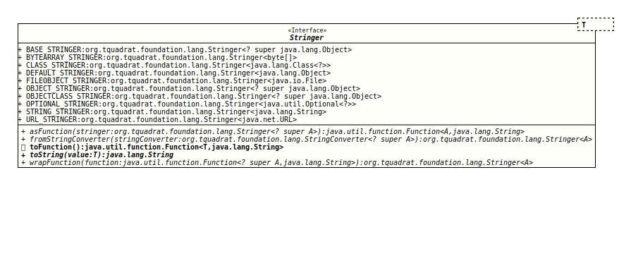

- Type Parameters:
T- The type of the argument value.
- Functional Interface:
- This is a functional interface and can therefore be used as the assignment target for a lambda expression or method reference.
This interface defines a method to compose a String representation from arbitrary objects.
It will also provide several convenience implementations for the interface that can be used with special argument types. Currently, these are
OBJECT_STRINGERas a catch-allBASE_STRINGERwhen the output of the default implementation ofObject.toString()is desired even when a more sophisticated implementation oftoString()is availableOBJECTCLASS_STRINGERwhen only the object's class should be returned instead of its contents/value.CLASS_STRINGERfor instances ofClassFILEOBJECT_STRINGERfor instances ofFileOPTIONAL_STRINGERfor instances ofOptionalSTRING_STRINGERfor instances ofStringURL_STRINGERfor instances ofURL(There is noURI_STRINGERasURIprovides a sufficient implementation ofObject.toString())
There are no explicit stringers for the classes from the java.time
package as instances of these classes have sufficient implementations of
Object.toString()
and are therefore already well covered by
OBJECT_STRINGER. Same is true for the class
Path.
This is a functional interface whose functional method is
toString(Object).
- Note:
-
- The method
toString(Object)will never returnnull; if called with anullargument, it will return the String "null".
This is different to the behaviour of thetoString(Object)method of an implementation ofStringConverterthat returnsnullfor anullargument.
- The method
- Author:
- Thomas Thrien (thomas.thrien@tquadrat.org)
- Version:
- $Id: Stringer.java 1060 2023-09-24 19:21:40Z tquadrat $
- Since:
- 0.1.0
- See Also:
- UML Diagram
-

UML Diagram for "org.tquadrat.foundation.lang.Stringer"
{kind=link}
-
Field Summary
FieldsModifier and TypeFieldDescriptionAn implementation ofStringerthat produces an output that looks like that from the default implementation ofObject.toString()static final Stringer<byte[]> An implementation ofStringerforbytearrays.A genericStringerimplementation that delegates toObjects.toString(Object).AStringerimplementation that callsString.format( "%s", o )for an objectoif that implements the interfaceFormattable, otherwise it delegates toObjects.toString(Object).An implementation ofStringerthat returns the name of the object's class instead of a representation of the object's value. -
Method Summary
Modifier and TypeMethodDescriptionasFunction(Stringer<? super A> stringer) Returns the givenStringeras an instance ofFunction.static <A> Stringer<A> fromStringConverter(StringConverter<? super A> stringConverter) Creates aStringerfor the given instance ofStringConverter.Returns thisStringerinstance as an instance ofFunction.static <A> Stringer<A> wrapFunction(Function<? super A, String> function) Wraps a function that returns a String to an argument stringer.
-
Field Details
-
BASE_STRINGER
An implementation of
Stringerthat produces an output that looks like that from the default implementation ofObject.toString(): it returns
.o.getClass().getName() + "@" + Integer.toHexString( o.hashCode() ); -
BYTEARRAY_STRINGER
An implementation of
Stringerforbytearrays.The result looks like this:
byte [<length>]where
lengthis the array length of the given argument. -
CLASS_STRINGER
-
DEFAULT_STRINGER
A genericStringerimplementation that delegates toObjects.toString(Object). -
FILEOBJECT_STRINGER
-
OBJECT_STRINGER
AStringerimplementation that callsString.format( "%s", o )for an objectoif that implements the interfaceFormattable, otherwise it delegates toObjects.toString(Object).- See Also:
-
OBJECTCLASS_STRINGER
An implementation ofStringerthat returns the name of the object's class instead of a representation of the object's value. -
OPTIONAL_STRINGER
An implementation of
Stringerfor instances ofOptional.It returns basically the result of
Objects.toString(Object,String)with the value of theOptionaland the text "[empty]" as thenullDefaultarguments. -
STRING_STRINGER
-
URL_STRINGER
-
-
Method Details
-
asFunction
@API(status=STABLE, since="0.0.5") static <A> Function<A,String> asFunction(Stringer<? super A> stringer) Returns the givenStringeras an instance ofFunction.- Type Parameters:
A- The type of the input for the stringer.- Parameters:
stringer- The instance to wrap.- Returns:
- The function.
-
fromStringConverter
@API(status=STABLE, since="0.0.7") static <A> Stringer<A> fromStringConverter(StringConverter<? super A> stringConverter) Creates a
Stringerfor the given instance ofStringConverter.A String converter cannot be used directly as a
StringerbecauseStringer'stoString()method will never returnnull(in case the argument isnull, it returns theNULL_STRING), whileStringConverter.toString()returnsnullfor anullargument.- Type Parameters:
A- The type of the input for the stringer.- Parameters:
stringConverter- TheStringConverterinstance.- Returns:
- The
Stringer.
-
toFunction
Returns thisStringerinstance as an instance ofFunction.- Returns:
- The function.
-
toString
- Parameters:
value- The value.- Returns:
- The String representation.
-
wrapFunction
@API(status=STABLE, since="0.0.7") static <A> Stringer<A> wrapFunction(Function<? super A, String> function) Wraps a function that returns a String to an argument stringer.- Type Parameters:
A- The type of the input for the function.- Parameters:
function- The function to wrap.- Returns:
- The argument stringer that wraps the function.
-